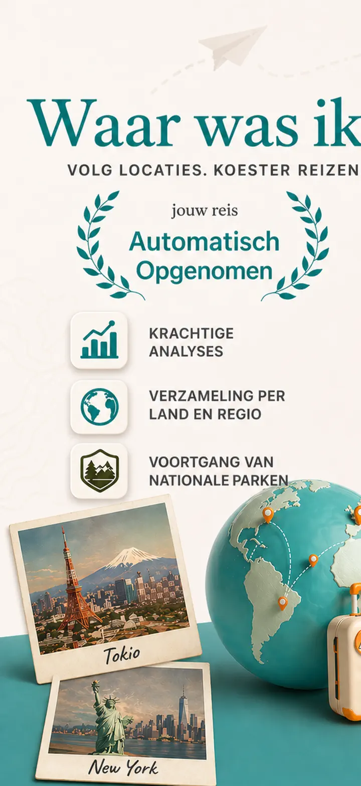
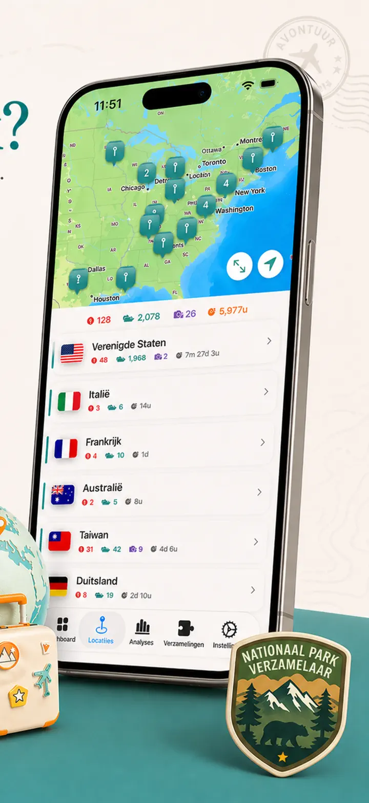
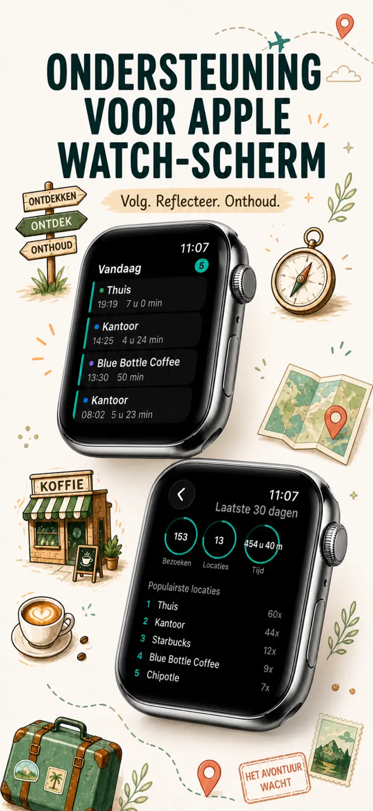
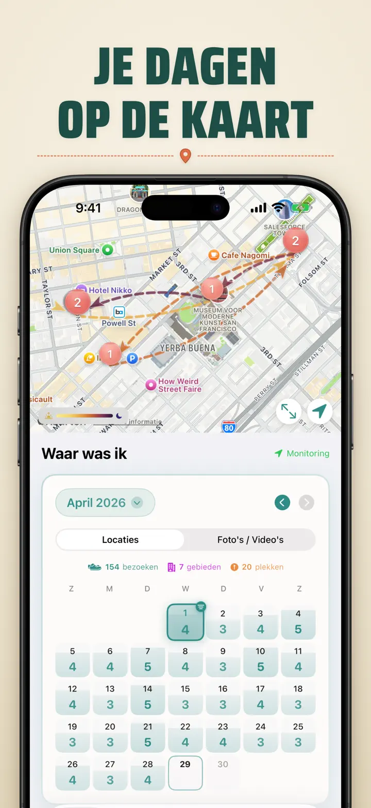
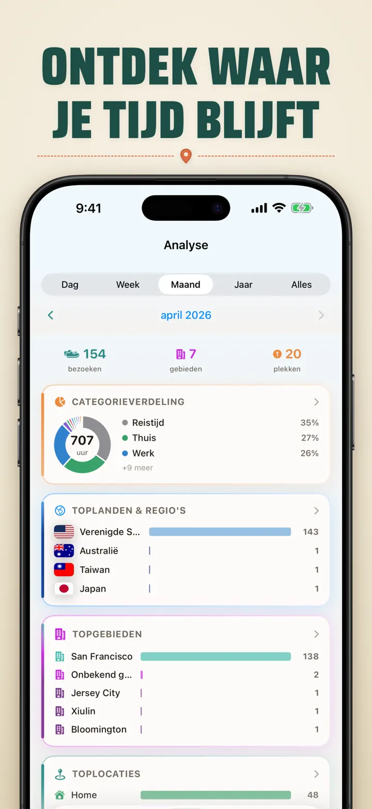
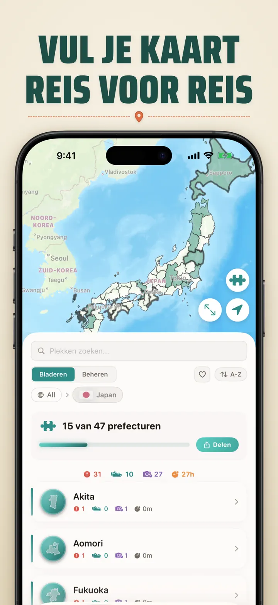
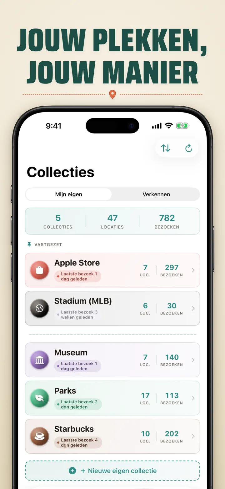
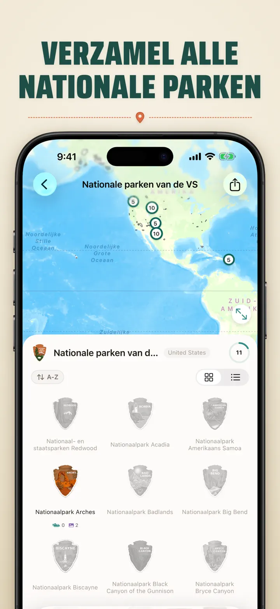
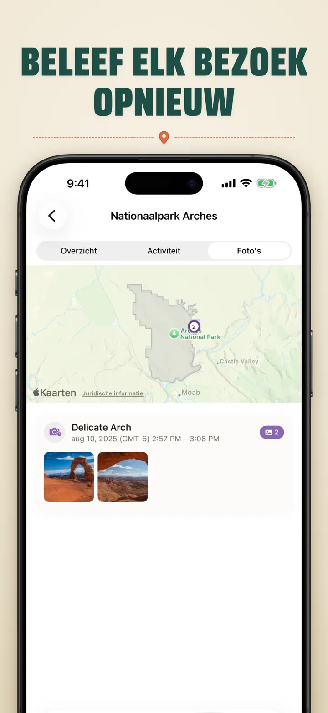

Waar was ik?
Locaties, foto's & voortgang
Nieuw: de 103 Ichinomiya-schrijnen van Japan, elk met een eigen gesneden insigne. Automatische bezoekregistratie en een privé-tijdlijn, allemaal op je apparaat.
Download in de App Store
Over de app
Where was I ? — Jouw persoonlijk locatiegeheugen
Heb je ooit geprobeerd dat geweldige restaurant van vorige maand te herinneren? Where was I ? legt je bezoeken automatisch vast en bouwt een prachtige tijdlijn van jouw levensverhaal.
AUTOMATISCHE TRACKING
Geen handmatige logging nodig. De app registreert stil wanneer je aankomt en vertrekt van plekken, en maakt een gedetailleerde bezoekgeschiedenis zonder enige moeite.
SLIMME KALENDERWEERGAVE
Bekijk je bezoeken per dag, week of maand. De intuïtieve kalender toont bezoektellingen en unieke plekken in één oogopslag. Tik op een dag om precies te zien waar je was.
HOME- & TOEGANGSSCHERM-WIDGETS
Zie je meest recente bezoeken met de middelgrote Home-widget. Toegangsschermwidgets tonen je huidige locatie, een live verblijftijdteller of het aantal bezoeken van vandaag — allemaal aantikbaar om direct terug in de app te springen.
GEORGANISEERDE LOCATIES
Locaties worden automatisch gegroepeerd op regio en stad. Wijs categorieën toe zoals Thuis, Werk, Sportschool of Café. Maak je eigen categorieën met aangepaste iconen en kleuren.
KRACHTIGE ANALYSES
Ontdek patronen in jouw leven:
- Tijdsverdeling over categorieën
- Jouw meest bezochte plekken
- Wekelijkse ritmeanalyse
- Trends in bezoekfrequentie
- Verblijfsduurgrafiek per locatie — zie hoe lang je gewoonlijk blijft, per dag, week, maand of jaar
LANDEN-REGIO-COLLECTIE
Maak van je reizen een puzzel! Zie hoeveel staten of regio's je in elk land hebt bezocht. Deel je voortgang als puzzelafbeelding.
VOORTGANG IN NATIONALE PARKEN
Verken de natuur! Log je bezoeken aan nationale parken automatisch.
100 BEROEMDE JAPANSE KASTELEN
Op reis door Japan? Een nieuwe ingebouwde collectie volgt je bezoeken aan de 100 beroemde kastelen van het land. Te vinden in het Collectie-tabblad → Ontdekken → Japan.
EIGEN COLLECTIES
Volg wat jij wilt — Apple Stores, musea, brouwerijen. Maak een collectie, stel trefwoorden in en zie hem automatisch vollopen. Elke collectie toont aantal, geschiedenis en een kaart.
JE LOCATIEGESCHIEDENIS IMPORTEREN
Kom je van een andere app? Neem je volledige geschiedenis mee — het formaat wordt automatisch herkend, grote exports worden verwerkt en je ziet een voorbeeld voordat er iets wordt geïmporteerd:
- Google Timeline (Google Maps-export of Google Takeout)
- Arc Timeline (de maandelijkse .json-bestanden die je uit Arc exporteert)
- Moves (ProtoGeo / Facebook Moves-back-up)
BULKBEHEER
Beheer al je locaties op één plek. Zoek, sorteer en filter. Selecteer meerdere locaties om ze tegelijk te categoriseren of te verwijderen.
PRIVACY VOOROP
Jouw locatiegegevens blijven op je apparaat. Geen accounts vereist. Geen gegevens naar servers.
PERFECT VOOR:
- Werkuren en locaties bijhouden
- Restaurants en winkels onthouden
- Je dagelijkse routine analyseren
- Reisdagboek en nationale parken
- Onkostendeclaraties en kilometers
FUNCTIES:
- Automatische aankomst- en vertrekdetectie
- Kalenderweergave met dagelijkse bezoektijdlijn
- Home- en Toegangsscherm-widgets met deep-linking
- Locatiegroepering op regio en stad
- Aangepaste categorieën met iconen en kleuren
- Slimme categoriesuggesties van Apple Maps
- Gedetailleerde bezoekgeschiedenis met duur
- Verblijfsduurgrafiek per locatie (dag / week / maand / jaar)
- Analysedashboard met inzichten
- Locaties zoeken en filteren
- Landen-regio-collectie met deelbare puzzelafbeelding
- Voortgangsregistratie nationale parken
- Ingebouwde collectie 100 beroemde Japanse kastelen
- Eigen collecties met trefwoord-matching, handmatig bewerken en statistieken
- Bulkbeheer van locaties
- Importeren uit Google Timeline, Arc Timeline en Moves
- Exportmogelijkheden
- Geen account vereist
- Privacygericht ontwerp
Begin vandaag met het bouwen van je locatiegeheugen. Download Where was I ? en vergeet nooit meer waar je bent geweest.
Privacy Policy: https://masawata.net/privacy-policy.html Terms Of Service: https://www.apple.com/legal/internet-services/itunes/dev/stdeula/
Schermafbeeldingen








Waar was ik?
Nieuw: de 103 Ichinomiya-schrijnen van Japan, elk met een eigen gesneden insigne. Automatische bezoekregistratie en een privé-tijdlijn, allemaal op je apparaat.
Download in de App Store